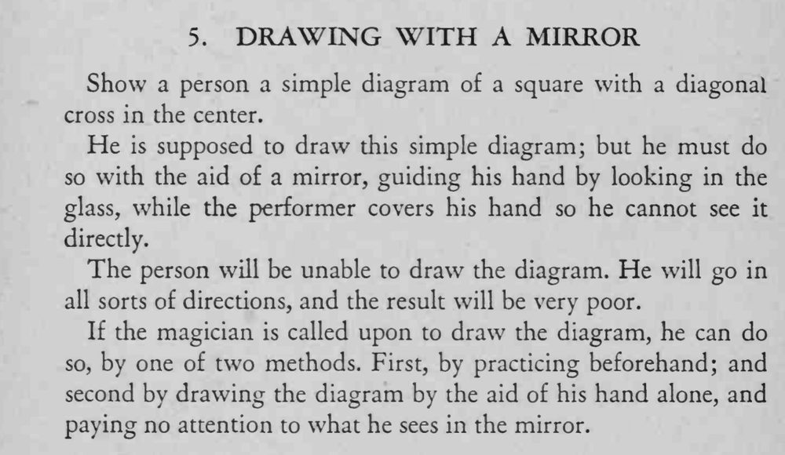

让人照着镜子画一个带对角交叉的正方形，谁都画不成；魔术师却能画得工工整整。
诀窍是不理会镜中影像、只靠手感，或者提前练熟。

Show a person a simple diagram of a square with a diagonal cross in the center. He is supposed to draw this simple diagram; but he must do so with the aid of a mirror, guiding his hand by looking in the glass, while the performer covers his hand so he cannot see it directly. The person will be unable to draw the diagram. He will go in all sorts of directions, and the result will be very poor. If the magician is called upon to draw the diagram, he can do so, by one of two methods. First, by practicing beforehand; and second by drawing the diagram by the aid of his hand alone, and paying no attention to what he sees in the mirror.